Skip to content
Électroniques
Maison
Beauté
Santé
Cuisine
Outils
Sports
Jouets
Bébés
Mode
Extérieur
Animaux
Jeux Vidéos
Livres
Rechercher :
Électroniques
Maison
Beauté
Santé
Cuisine
Outils
Sports
Jouets
Bébés
Mode
Extérieur
Animaux
Jeux Vidéos
Livres
Rechercher :
Rechercher :
Accueil
>
Outils
Outils
Comparatif des 10 meilleurs Nettoyants FAP de 2025
Comparatif des 10 meilleurs Rouleaux peinture de 2025
Comparatif des 10 meilleures Huiles moteurs de 2025
Comparatif des 10 meilleurs Rabots de 2025
Comparatif des 10 meilleurs Tableaux blanc effaçables de 2025
Comparatif des 10 meilleures Tables à repasser de 2025
Comparatif des 10 meilleurs pneus vélo route de 2025
Comparatif des 10 meilleures Jumelles compactes de 2025
Comparatif des 10 meilleurs transporteurs de 2025
Comparatif des 10 meilleurs Moulinets carnassiers de 2025
Comparatif des 10 meilleurs nettoyants jantes de 2025
Comparatif des 10 meilleurs robinets thermostatiques radiateur de 2025
Comparatif des 10 meilleurs pièges a taupe de 2025
Comparatif des 10 meilleures cannes à pêche de 2025
Comparatif des 10 meilleurs tableaux magnétiques de 2025
Comparatif des 10 meilleurs lance-pierres de 2025
Comparatif des 10 meilleurs thés vert bio de 2025
Comparatif des 10 meilleurs disques de frein voiture de 2025
Comparatif des 10 meilleurs niveaux laser rotatif de 2025
Comparatif des 10 meilleurs pistolets à crépir de 2025
Comparatif des 10 meilleurs croisillons autonivelants de 2025
Comparatif des 10 meilleurs pneus 4 saisons de 2025
Comparatif des 10 meilleures servantes atelier complètes de 2025
Comparatif des 10 meilleurs pistolets à peinture de 2025
Comparatif des 10 meilleures dameuses manuelles de 2025
Comparatif des 10 meilleurs rotofils à batterie de 2025
Comparatif des 10 meilleures têtes universelles débroussailleuse de 2025
Comparatif des 10 meilleurs Polish voiture de 2025
Comparatif des 10 meilleures lessives liquides de 2025
Intel HD Graphics 500 – Test et avis
Pneu Kleber – Test et avis
Resmed Airsense 10 – Test et avis
I5 7300HQ – Test et avis
Pneu Bridgestone – Test et avis
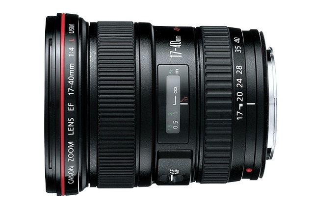
Comparatif des 10 meilleurs objectifs Canon de 2023
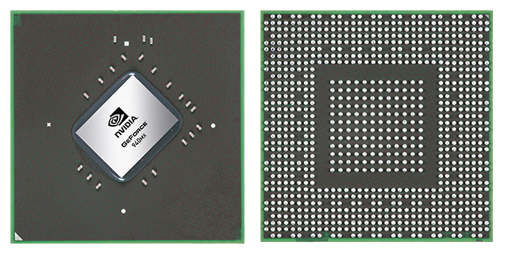
Nvidia Geforce 940MX – Test et avis
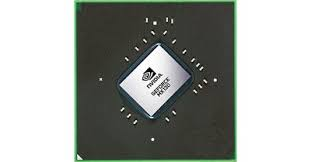
Nvidia Geforce MX130 – Test et avis
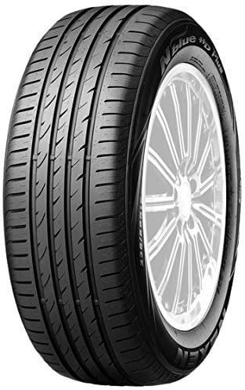
Pneu Nexen – Test et avis
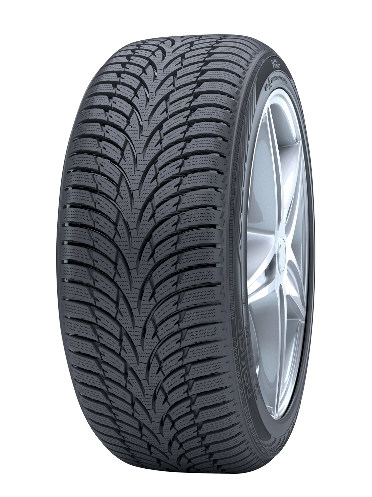
Pneu Nokian – Test et avis
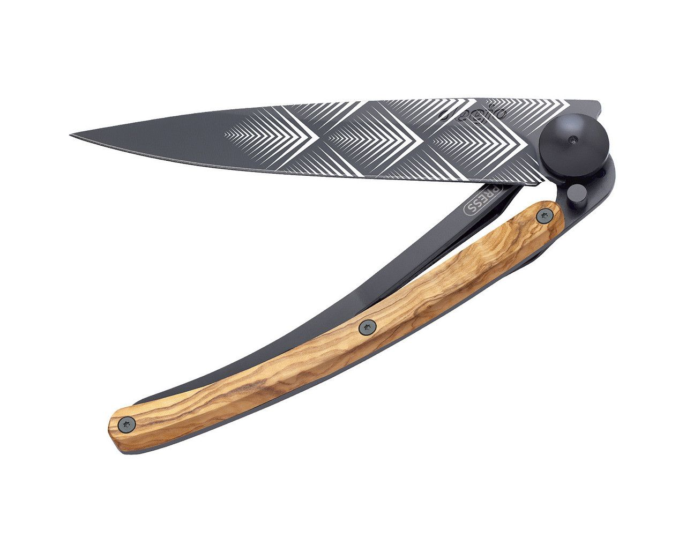
Comparatif des 10 meilleurs Deejo de 2023
Pneu uniroyal RainExpert 3 – Test et avis
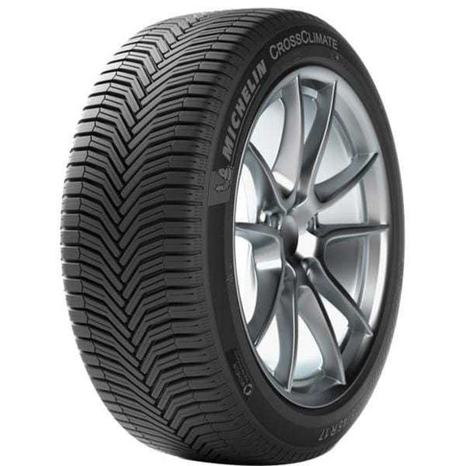
comparatif des 10 meilleurs pneus 4 saisons de 2023
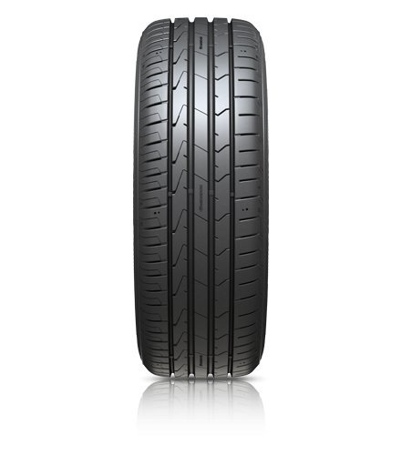
pneu Hankook – test et avis
Comparatif des 10 meilleurs Porte-Velos Electriques
Comparatif des 10 meilleurs Ventirad de 2023
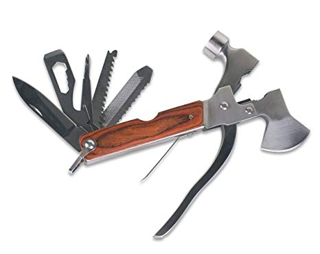
Comparatif des 10 meilleurs Multi Tools de 2023
Comparatif des 10 meilleurs Tours à Bois
Comparatif des 10 meilleurs Trépieds Photo de 2023
Comparatif des 10 meilleurs Pièges Photographiques
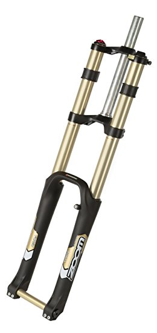
Comparatif des 10 meilleures fourches VTT de 2023
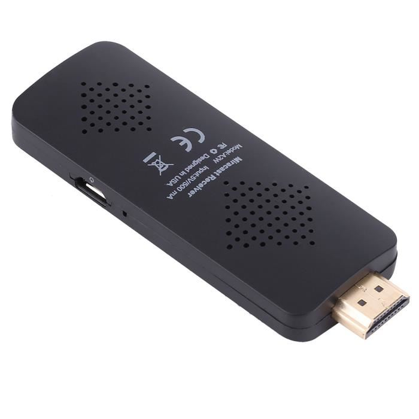
Comparatif des 10 meilleurs Dongles Miracast
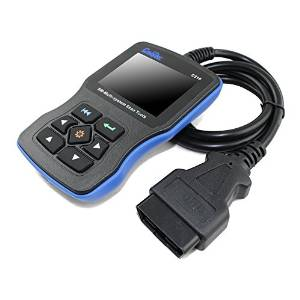
Comparatif des 10 meilleurs Appareils diagnostic auto
Sigma 17-70 Contemporary – Test et avis
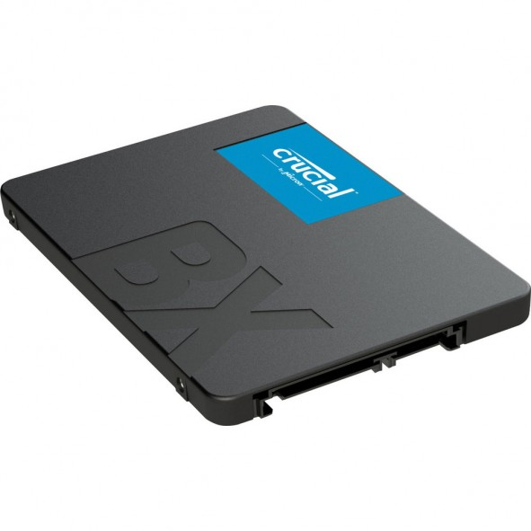
Comparatif des 10 meilleurs SSD 240 Go de 2023
Comparatif des 10 meilleures Echelles Telescopiques
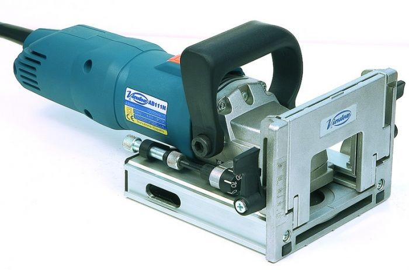
Comparatif des 10 meilleures Lamelleuses de 2023
Comparatif des 10 meilleures tronçonneuses de 2023
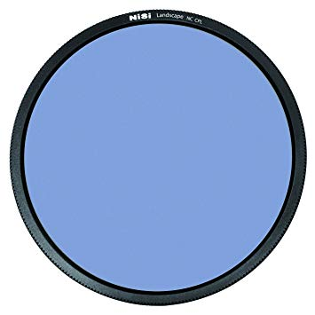
Comparatif des 10 meilleurs filtres polarisants
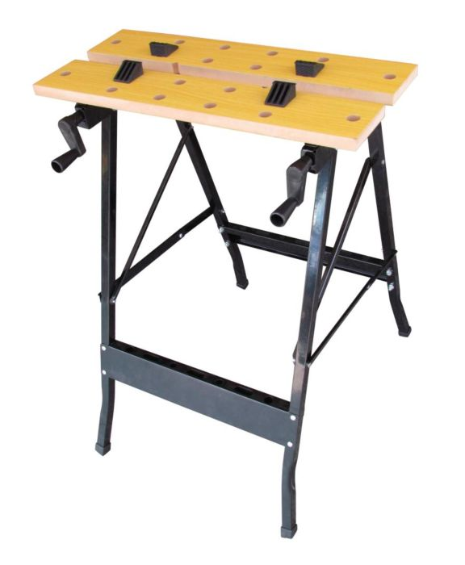
Comparatif des 10 meilleurs etablis pliants
Comparatif des 10 meilleurs volants PC de 2023
PFS 5000 E – Test et avis
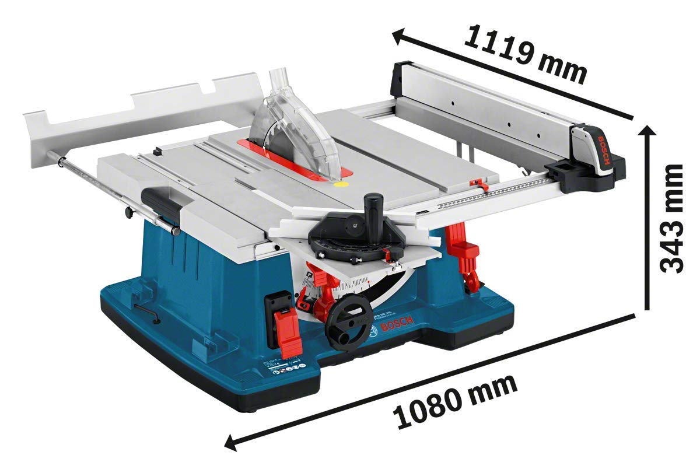
Bosch GTS 10 XC – Test et avis
Faac C720 – Test et avis
Eagletone UM30 – Test et avis
Zodiac MX6 – Test et avis
Dewalt DW745 – Test et avis
Asus Z170 Pro Gaming – Test et avis
MSI 970 gaming – Test et avis
Intel Core i5 4460 – Test et avis
GK4 – Test et avis
Visseuse Worx 20V – Test et avis
Husqvarna 545RX – Test et avis
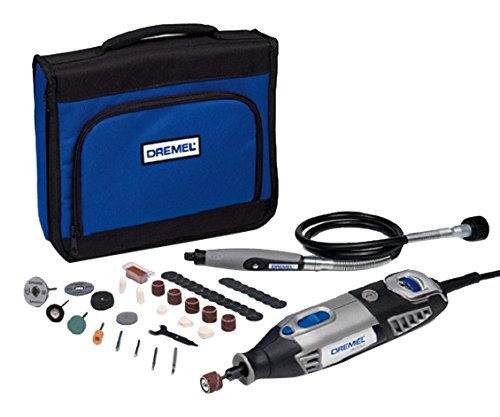
Dremel 4000 – Test et avis
Thrustmaster T150 – Test et avis
Garrett Euro Ace 350 – Test et avis
AMD FX 6300 – Test et avis
Maxiecu 2 – Test et avis
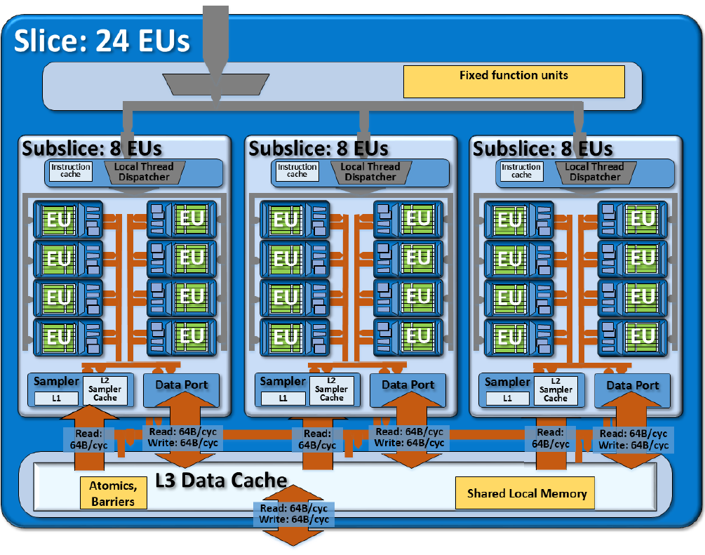
Carte Graphique Intel Hd 520 – Test et avis
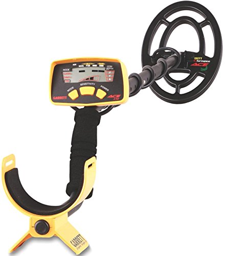
Garrett Ace 150 – Test et avis
Polti Lecoaspira FAV80 – Test et avis
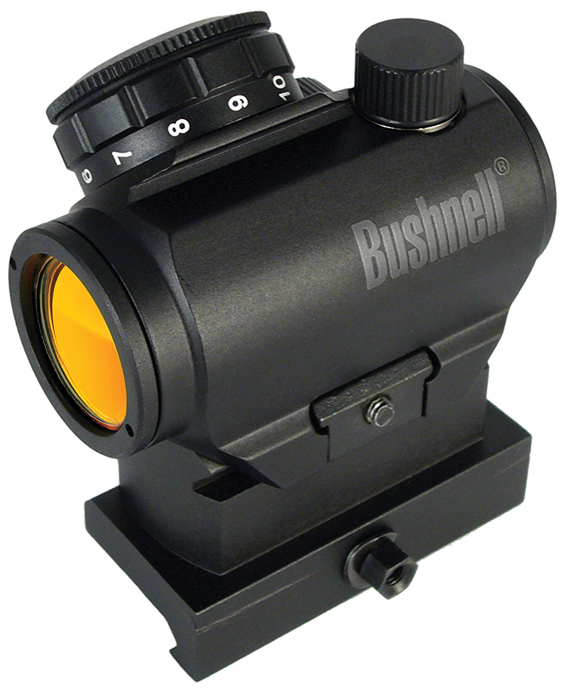
Bushnell Trs 25 – Test et avis
Jumelles Bushnell Legend Ultra Hd 10×42 – Test et avis
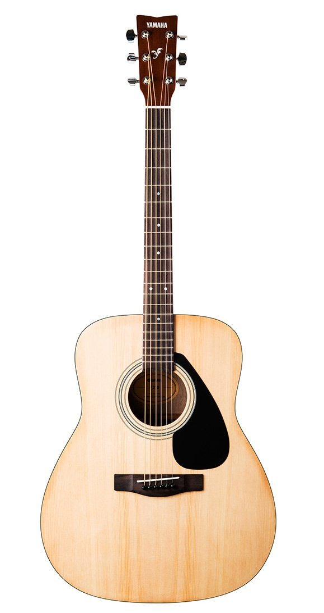
Yamaha F310 – Test et avis
Gysmi 160P – Test et avis
Intel Core I5-6400 – Test et avis
Power 8 Workshop – Test et avis
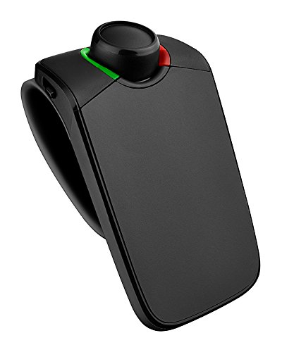
Parrot Minikit Neo 2 HD – Test et avis
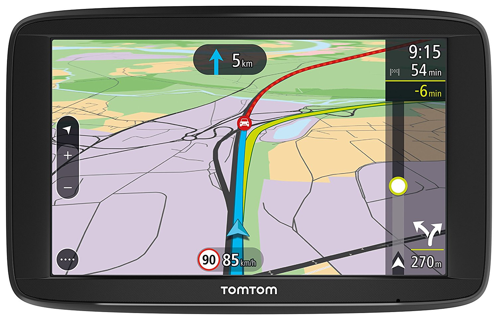
Tomtom Via 62 – Test et avis
Garrett Ace 250 – Test et avis
Office 365 – Test et avis
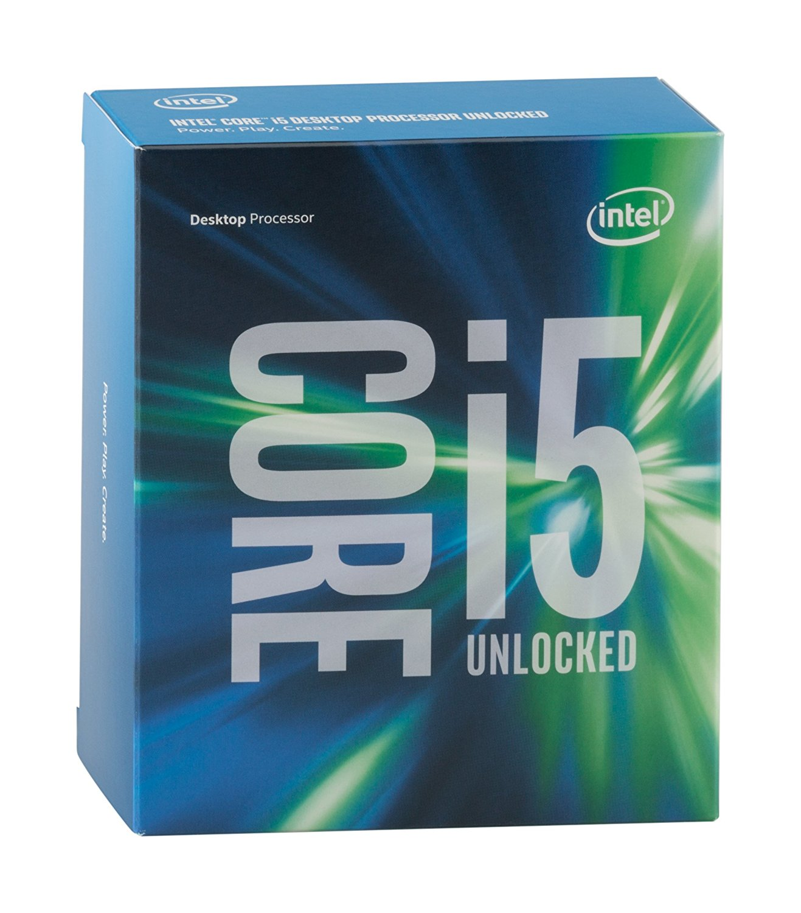
Intel Core I5 – Test et avis
Timbertech – Test et avis
Husqvarna 236 – Test et avis
Pinnacle Studio 19 – Test et avis
Eagletone – Test et avis
Batterie Fulmen – Test et avis
Machine à Coudre Toyota – Test et avis
Lunii – Test et avis
Comparatif des 10 meilleurs antivols voiture de 2023